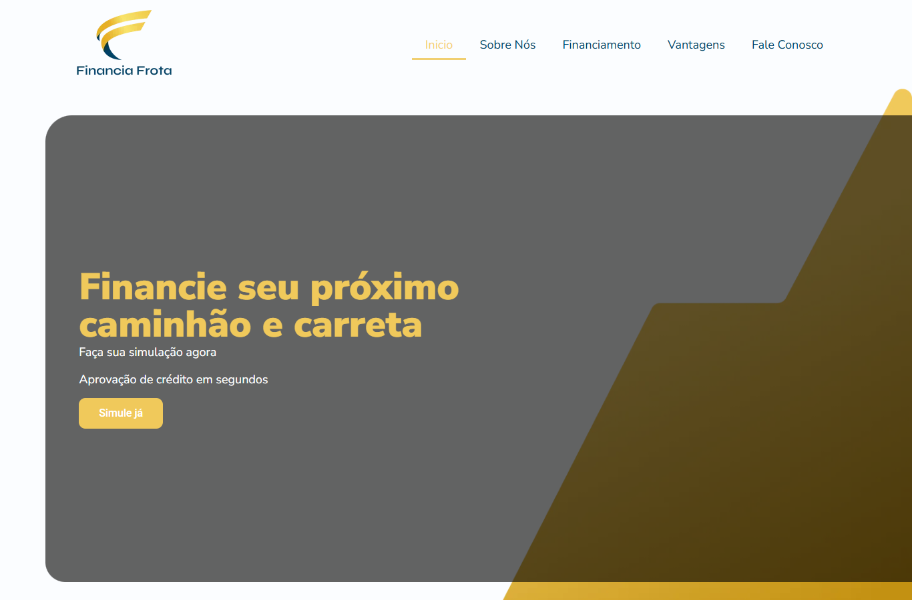
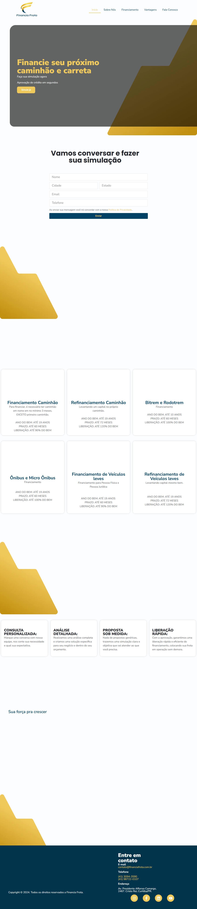

Sistema de Investigação de Marca e Identidade Online
https://financiafrota.com.br/
Prioridade: MEDIUM · Cenário: B_AMBIGUOUS_COMMUNICATION · Revisão humana: PENDING
Trata-se de página comercial de correspondente bancário ('Financia Frota') que oferta financiamento e refinanciamento de caminhões e veículos leves e se declara 'Correspondente Autorizado do Banco BV' segundo o índice de busca (E-DISC-001). Apesar de utilizar marca e domínio próprios, o site realiza captação de dados para simulação de crédito sem informar em nenhum local visível sua Razão Social, seu CNPJ ou os dados de Ouvidoria da instituição financeira contratante, em desacordo com as exigências de transparência da Resolução CMN nº 4.935/2021. Classifica-se como B_AMBIGUOUS_COMMUNICATION (REVIEW_REQUIRED / prioridade MEDIUM). [Revisor: CONFIRM] A página pertence a uma promotora/correspondente bancário ('Financia Frota') dedicada ao financiamento e refinanciamento de caminhões e veículos leves, que segundo o índice de busca (E-DISC-001) declara atuar como 'Correspondente Autorizado do Banco BV'. Apesar de utilizar identidade visual própria, capta dados para simulação de crédito sem exibir de forma visível sua razão social, CNPJ real (o número detectado em E-CONTACT-9 é apenas o ID do perfil do Facebook) ou telefone de ouvidoria do Banco BV (E-SHOT-FULL), descumprindo as exigências de transparência da Resolução CMN nº 4.935/2021. Confirma-se a classificação REVIEW_REQUIRED com prioridade MEDIUM.


| Ref | Tipo | Local | Conteúdo |
|---|---|---|---|
| E-URL | domain | url | URL final: https://financiafrota.com.br/ (domínio: financiafrota.com.br) |
| E-DISC-001 | text | search_index | Índice de busca (grounding): financiafrota.com.br — **URL:** `https://financiafrota.com.br` | **Uso da Marca e Recursos:** Landing page voltada à comercialização e financiamento de caminhões e frotas | Aprovação de crédito em segundos"*), coletando dados dos clientes | **Conformidade (CNPJ / Razão Social / Declaração):** Apresenta declaração explícita de atuação (*"Pode confiar, somos certificados Febraban e Correspondente Autorizado do Banco BV"*) | **Conformidade (CNPJ / Razão Social / Declaração):** Apresenta declaração explícita de atuação (*"Pode confiar, somos certificados Febraban e Correspondente Autorizado do Banco BV"*), porém omite a Razão Social completa e o CNPJ de forma visível na dobra principal de captação |
| E-SHOT-VIEWPORT | screenshot | viewport | evidence\C2aa5fecbea\attempt-1\viewport.png (sha256 6cb6be41f0ad351d…) |
| E-SHOT-FULL | screenshot | page | evidence\C2aa5fecbea\attempt-1\fullpage.png (sha256 6a1bccd2921b3ecb…) |
| E-TITLE | title | head | Financia Frota - Financie seu próximo caminhão, carreta, trailer, motorhome ou reboque. |
| E-META-1 | meta | head | description: Sua solução financeira especializada em otimizar e impulsionar sua frota de caminhões, carretas, trailers, motorhomes e reboques. Descubra as melhores opções de financiamento, leasing e gestão de frota para maximizar a eficiência e reduzir os custos do seu negócio. |
| E-META-2 | meta | head | og:site_name: Financia Frota |
| E-META-3 | meta | head | og:title: Financia Frota - Financie seu próximo caminhão, carreta, trailer, motorhome ou reboque. |
| E-META-4 | meta | head | og:description: Sua solução financeira especializada em otimizar e impulsionar sua frota de caminhões, carretas, trailers, motorhomes e reboques. Descubra as melhores opções de financiamento, leasing e gestão de frota para maximizar a eficiência e reduzir os custos do seu negócio. |
| E-CANONICAL | meta | head | https://financiafrota.com.br/ |
| E-HEAD-1 | heading | page | Financie seu próximo caminhão e carreta |
| E-HEAD-2 | heading | page | Vamos conversar e fazer sua simulação |
| E-HEAD-3 | heading | page | CONSULTA PERSONALIZADA: |
| E-HEAD-4 | heading | page | ANÁLISE DETALHADA: |
| E-HEAD-5 | heading | page | PROPOSTA SOB MEDIDA: |
| E-HEAD-6 | heading | page | LIBERAÇÃO RÁPIDA: |
| E-HEAD-7 | heading | page | Sua força pra crescer |
| E-HEAD-8 | heading | page | Entre em contato |
| E-FOLD | text | viewport (acima da dobra) | Inicio Sobre Nós Financiamento Vantagens Fale Conosco Financie seu próximo caminhão e carreta Faça sua simulação agora Aprovação de crédito em segundos Simule já |
| E-NAV | nav | header | Inicio <https://financiafrota.com.br/> | Sobre Nós <https://financiafrota.com.br/#sobrenos> | Financiamento <https://financiafrota.com.br/#financiamento> | Vantagens <https://financiafrota.com.br/#vantagens> | Fale Conosco <https://financiafrota.com.br/#contato> |
| E-CTA-1 | cta | page | Simule já <https://financiafrota.com.br/#form> |
| E-CTA-2 | cta | page | Enviar |
| E-CONTACT-1 | contact | page | Simule já <https://wa.me/5541995348808?text=Ol%C3%A1%21+Encontrei+seu+site+e+gostaria+de+saber+mais+sobre+os+financiamentos.> |
| E-CONTACT-2 | contact | page | Contato <https://wa.me/5541995348808?text=Ol%C3%A1%21+Encontrei+seu+site+e+gostaria+de+saber+mais+sobre+os+servi%C3%A7os+de+Cons%C3%B3rcio.> |
| E-CONTACT-3 | contact | page | <tel:(41) 3094-3590> |
| E-CONTACT-4 | contact | page | <tel:(41) 98722-0107> |
| E-CONTACT-5 | contact | page | contato@financiafrota.com.br <mailto:contato@financiafrota.com.br> |
| E-CONTACT-6 | contact | page | (41) 3094-3590 <tel:(41) 3094-3590> |
| E-CONTACT-7 | contact | page | (41) 98722-0107 <tel:(41) 98722-0107> |
| E-CONTACT-8 | contact | page | Instagram <https://www.instagram.com/financiafrota/> |
| E-CONTACT-9 | contact | page | Facebook-f <https://www.facebook.com/profile.php?id=61555763997793> |
| E-IMG-1 | image | page (acima da dobra) | imagem alt='FINANCIA-FROTA-LOGO' src=https://financiafrota.com.br/wp-content/uploads/2024/01/FINANCIA-FROTA-LOGO-1.png (146x103, acima da dobra) |
| E-IMG-2 | image | page | imagem alt='FINANCIA-FROTA-LOGO' src=data:image/svg+xml,%3Csvg%20xmlns='http://www.w3.org/2000/svg'%20viewBox='0%200%20206%20145'%3E%3C/svg%3E (164x115, abaixo da dobra) |
| E-TXT-001 | text | page | Telefone |
| E-TXT-002 | text | page | Endereço |
| Dimensão | Sinal | Achado | Refs |
|---|---|---|---|
| VISUAL_IDENTITY | LEGITIMATE | O site utiliza identidade visual própria ('Financia Frota') em tons de amarelo, cinza e azul-escuro, distinta da identidade visual oficial do Banco BV. | E-IMG-1 E-SHOT-VIEWPORT E-SHOT-FULL |
| DECLARED_COMMERCIAL_IDENTITY | CONFUSION | Ausência de CNPJ e razão social na página e no rodapé, constando apenas o nome fantasia 'Financia Frota' e endereço físico em Curitiba/PR. | E-DISC-001 E-SHOT-FULL |
| CORRESPONDENT_TRANSPARENCY | CONFUSION | Embora haja registro indexado de declaração como 'Correspondente Autorizado do Banco BV' (E-DISC-001), a página não cumpre os requisitos de transparência da Resolução CMN nº 4.935/2021 por omitir CNPJ, razão social e ouvidoria do banco contratante. | E-DISC-001 E-SHOT-FULL |
| INSTITUTIONAL_LANGUAGE | NEUTRAL | A comunicação foca na intermediação de financiamento e refinanciamento de frotas e veículos sem reivindicar ser o canal oficial do Banco BV no título ou cabeçalho. | E-TITLE E-FOLD E-DISC-001 |
| LOGO_USAGE | NEUTRAL | Na captura de tela completa, a seção abaixo do título 'Sua força pra crescer' (E-HEAD-7) aparece em branco por provável carregamento incompleto de elementos dinâmicos, não sendo visível o logotipo do Banco BV na imagem capturada. | E-HEAD-7 E-SHOT-FULL |
| SERVICE_JOURNEY | CONFUSION | Oferta de formulário de simulação de financiamento e captação via WhatsApp sem identificação transparente da empresa responsável pelo tratamento dos dados e intermediação. | E-HEAD-2 E-CTA-1 E-CONTACT-1 E-SHOT-FULL |
| CONTACT_CHANNELS | LEGITIMATE | Canais de contato utilizam domínio e telefones próprios (contato@financiafrota.com.br e números com DDD 41). | E-CONTACT-1 E-CONTACT-5 E-CONTACT-6 E-CONTACT-7 |
| CONSUMER_CONFUSION | CONFUSION | A ausência de identificação societária (CNPJ/Razão Social) combinada à atuação como correspondente autorizado do Banco BV prejudica a transparência exigida na oferta de crédito ao consumidor. | E-DISC-001 E-SHOT-FULL |
Trata-se de página comercial de correspondente bancário ('Financia Frota') que oferta financiamento e refinanciamento de caminhões e veículos leves e se declara 'Correspondente Autorizado do Banco BV' segundo o índice de busca (E-DISC-001). Apesar de utilizar marca e domínio próprios, o site realiza captação de dados para simulação de crédito sem informar em nenhum local visível sua Razão Social, seu CNPJ ou os dados de Ouvidoria da instituição financeira contratante, em desacordo com as exigências de transparência da Resolução CMN nº 4.935/2021. Classifica-se como B_AMBIGUOUS_COMMUNICATION (REVIEW_REQUIRED / prioridade MEDIUM).
Nenhum CNPJ ou razão social identificáveis no conteúdo coletado.
| Tipo | Valor | Ref | Contexto |
|---|---|---|---|
| domain | financiafrota.com.br | E-URL | |
| cnpj | 61.555.763/9977-93 (dígito inválido) | E-CONTACT-9 | Facebook-f <https://www.facebook.com/profile.php?id=61555763997793 |
| contato@financiafrota.com.br | E-CONTACT-5 | ||
| social_profile | https://www.instagram.com/financiafrota/ | E-CONTACT-8 | |
| social_profile | https://www.facebook.com/profile.php?id=61555763997793 | E-CONTACT-9 | |
| trade_name | Financia Frota | E-META-2 | |
| phone | (41) 3094-3590 | E-CONTACT-3 | |
| phone | (41) 98722-0107 | E-CONTACT-4 | |
| Simule já <https://wa.me/5541995348808?text=Ol%C3%A1%21+Encontrei+seu+site+e+gostaria+de+saber+mais+sobre+os+financiamentos.> | E-CONTACT-1 | ||
| Contato <https://wa.me/5541995348808?text=Ol%C3%A1%21+Encontrei+seu+site+e+gostaria+de+saber+mais+sobre+os+servi%C3%A7os+de+Cons%C3%B3rcio.> | E-CONTACT-2 | ||
| partnership_declaration | Autorizado | E-DISC-001 | **Conformidade (CNPJ / Razão Social / Declaração):** Apresenta declaração explícita de atuação (*"Pode confiar, somos certificados Febraban e Correspondente Autorizado do Banco BV"*) |
Mapeamento indicativo para apoio à auditoria. Não constitui conclusão regulatória; a decisão definitiva pertence à auditoria.
Fonte: NORMATIVE
Art. 14. O contrato de correspondente deve estabelecer: [...] II - vedação à utilização, pelo contratado, de logomarca ou de outros atributos que sejam similares aos adotados pela instituição contratante em suas agências, postos de atendimento, sítio eletrônico na internet, aplicativo ou outras plataformas de comunicação em rede;
Evidência observada: E-IMG-1 E-SHOT-FULL E-SHOT-VIEWPORT
Fonte: NORMATIVE
Art. 14. O contrato de correspondente deve estabelecer: [...] III - divulgação ao público, pelo contratado, de sua condição de prestador de serviços à instituição contratante, identificada pelo nome com que é conhecida no mercado, com descrição dos produtos e serviços oferecidos e canais de contato da instituição contratante, inclusive de sua ouvidoria, em local visível, em destaque e em formato legível, por meio de: a) sítio eletrônico do correspondente na internet, acessível na página inicial; b) aplicativo e outras plataformas de comunicação em rede do correspondente; [...]
Hipótese: Há declaração da condição de correspondente/prestador, mas outros elementos da página (DECLARED_COMMERCIAL_IDENTITY, CONSUMER_CONFUSION) podem contradizê-la ou reduzir seu efeito (destaque, legibilidade e identificação da contratante a verificar). A norma disciplina correspondentes contratados; o responsável não foi identificado como correspondente.
Evidência observada: E-CONTACT-9 E-DISC-001 E-HEAD-7 E-SHOT-FULL
Informação faltante:
Fonte: NORMATIVE
Art. 3º O correspondente atua por conta e sob as diretrizes da instituição contratante, que assume inteira responsabilidade pelo atendimento prestado aos clientes e usuários por meio do contratado.
Hipótese: Atendimento ao público prestado por meio do contratado em condições que podem não seguir as diretrizes da contratante. A norma disciplina correspondentes contratados; o responsável não foi identificado como correspondente.
Evidência observada: E-CONTACT-1 E-CTA-1 E-FOLD E-HEAD-2 E-SHOT-FULL
Informação faltante:
Se o responsável não for correspondente contratado, os indícios podem caracterizar uso indevido de marca ou fraude, fora do escopo da Res. 4.935: avaliar encaminhamento às áreas jurídica/segurança.
Limitações: requisitos contratuais/internos não fornecidos: mapeamento limitado ao texto normativo
Decisão: CONFIRM → REVIEW_REQUIRED / MEDIUM
A página pertence a uma promotora/correspondente bancário ('Financia Frota') dedicada ao financiamento e refinanciamento de caminhões e veículos leves, que segundo o índice de busca (E-DISC-001) declara atuar como 'Correspondente Autorizado do Banco BV'. Apesar de utilizar identidade visual própria, capta dados para simulação de crédito sem exibir de forma visível sua razão social, CNPJ real (o número detectado em E-CONTACT-9 é apenas o ID do perfil do Facebook) ou telefone de ouvidoria do Banco BV (E-SHOT-FULL), descumprindo as exigências de transparência da Resolução CMN nº 4.935/2021. Confirma-se a classificação REVIEW_REQUIRED com prioridade MEDIUM.
| Tema | Severidade | Questionamento | Refs |
|---|---|---|---|
| domain_attribution | MEDIUM | Responsável pela página não identificado; a conclusão sobre a marca não pode ser atribuída a um estabelecimento específico. | E-URL |
| Fonte | Consulta / hipótese | URL original | Título / trecho |
|---|---|---|---|
| grounding | Objetivo: Revendas de seminovos e lojas multimarcas que divulgam financiamento da marca.
Execute no Google Search as seguintes consultas (dorks):
- "Banco BV" financiamento (loja OR revenda OR seminovos OR multimarcas) veículos -site:bv.com.br -site:bancobv.com.br -site:bvfinanceira.com.br -site:bvinvestimentos.com.br -site:napista.com.br -site:bvopen.com.br -site:meufinanciamentosolar.com.br -site:votorantim.com.br -site:vam.com.br -site:reclameaqui.com.br -site:jusbrasil.com.br -site:jus.br -site:weebly.com -site:site123.me
- "bv financeira" (seminovos OR multimarcas OR revenda) financiamento -site:bv.com.br -site:bancobv.com.br -site:bvfinanceira.com.br -site:bvinvestimentos.com.br -site:napista.com.br -site:bvopen.com.br -site:meufinanciamentosolar.com.br -site:votorantim.com.br -site:vam.com.br -site:reclameaqui.com.br -site:jusbrasil.com.br -site:jus.br -site:weebly.com -site:site123.me
- ("financiamos" OR "trabalhamos com" OR "financie") ("bv financeira" OR "Banco BV") veículos -site:bv.com.br -site:bancobv.com.br -site:bvfinanceira.com.br -site:bvinvestimentos.com.br -site:napista.com.br -site:bvopen.com.br -site:meufinanciamentosolar.com.br -site:votorantim.com.br -site:vam.com.br -site:reclameaqui.com.br -site:jusbrasil.com.br -site:jus.br -site:weebly.com -site:site123.me
Liste de forma abrangente as páginas públicas encontradas (até 12 resultados distintos), informando para cada uma o nome do estabelecimento/perfil, a URL e como a marca é utilizada (destaque visual, título, feirão, simulador, redes sociais e se há ou não identificação clara de CNPJ e condição de correspondente bancário). H2-product:financiamento de carro e multimarcas | https://financiafrota.com.br/ | financiafrota.com.br **URL:** `https://financiafrota.com.br` | **Uso da Marca e Recursos:** Landing page voltada à comercialização e financiamento de caminhões e frotas | Aprovação de crédito em segundos"*), coletando dados dos clientes | **Conformidade (CNPJ / Razão Social / Declaração):** Apresenta declaração explícita de atuação (*"Pode confiar, somos certificados Febraban e Correspondente Autorizado do Banco BV"*) | **Conformidade (CNPJ / Razão Social / Declaração):** Apresenta declaração explícita de atuação (*"Pode confiar, somos certificados Febraban e Correspondente Autorizado do Banco BV"*), porém omite a Razão Social completa e o CNPJ de forma visível na dobra principal de captação |
Original: https://financiafrota.com.br/
Final: https://financiafrota.com.br/
| Artefato | Caminho | SHA-256 | Bytes |
|---|---|---|---|
| screenshot_viewport | evidence\C2aa5fecbea\attempt-1\viewport.png | 6cb6be41f0ad351d0f2319627f76ce16a3eeb5a1b55f0c1a568b27ba9192d706 | 87327 |
| screenshot_full | evidence\C2aa5fecbea\attempt-1\fullpage.png | 6a1bccd2921b3ecb5ff69bab7bf0498d1a9b045ed1531a9c08b3a1622364a16f | 448917 |
| html | evidence\C2aa5fecbea\attempt-1\page.html.txt | cb36891149e91ece1a16af6c70b628a93829f778eb0b19ad8850a72aa8aefede | 389736 |
| text | evidence\C2aa5fecbea\attempt-1\text.txt | 971123a70483c67f36e21e1c71d414b342f3b834e108a3d9c9e4aa3d1beb8c14 | 2039 |
| page_data | evidence\C2aa5fecbea\attempt-1\page.json | 673014b837b422fc03616fdb328047ed3de3a46f9d5571cd4c31a2e0fd486bb1 | 11945 |
| Quando | De | Para | Nota |
|---|---|---|---|
| 2026-11-23T14:17:57+00:00 | DISCOVERED | QUEUED | prioritised (score 1.5) |
| 2026-11-23T14:36:07+00:00 | QUEUED | COLLECTING | |
| 2026-11-23T14:36:16+00:00 | COLLECTING | COLLECTED | |
| 2026-11-23T14:36:16+00:00 | COLLECTED | ANALYZING | |
| 2026-11-23T14:36:53+00:00 | ANALYZING | REVIEWING | |
| 2026-11-23T14:37:03+00:00 | REVIEWING | COMPLETED |